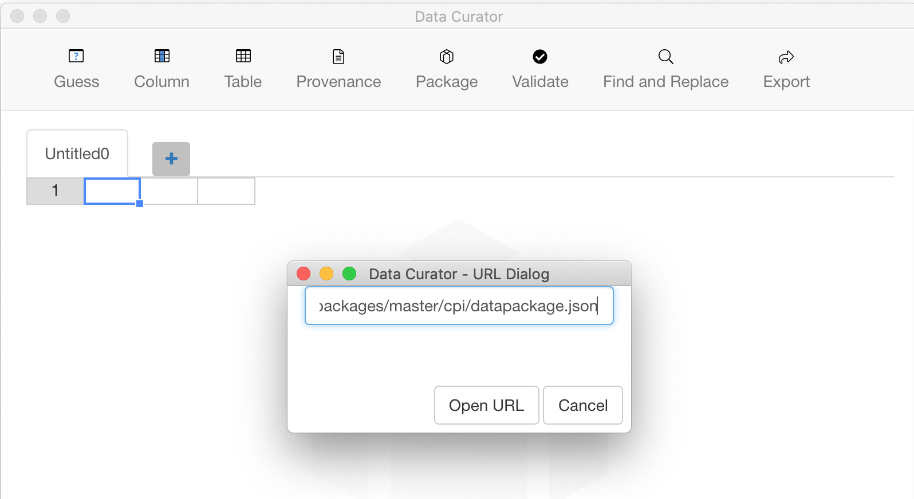

You can open a Tabular Data Package< to import multiple data files, their descriptions and validation rules.
Choose File > Open > Data Package, and choose the location of the Data Package from a:
On opening the Data Package:
If you make any changes, they cannot be saved back to the original Data Package so you will need to save your changes and export a new Data Package.
